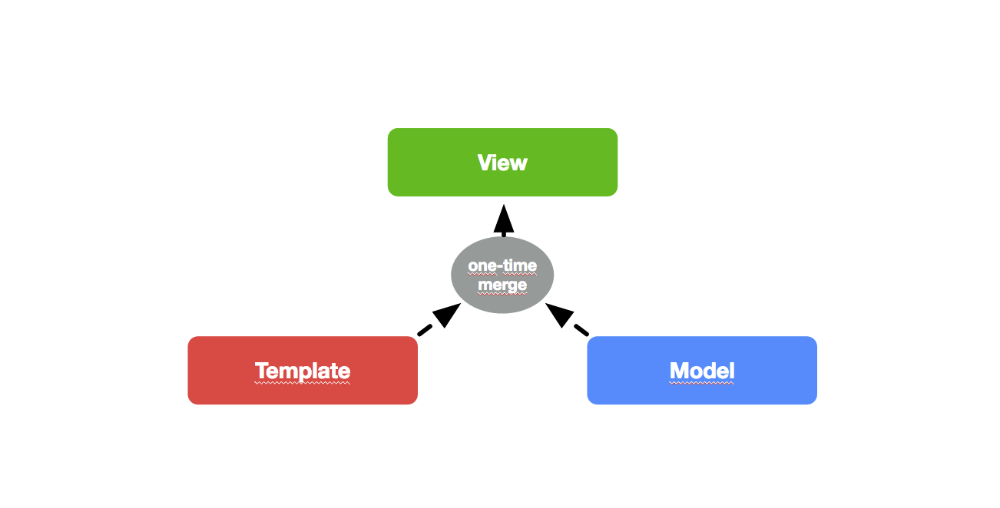
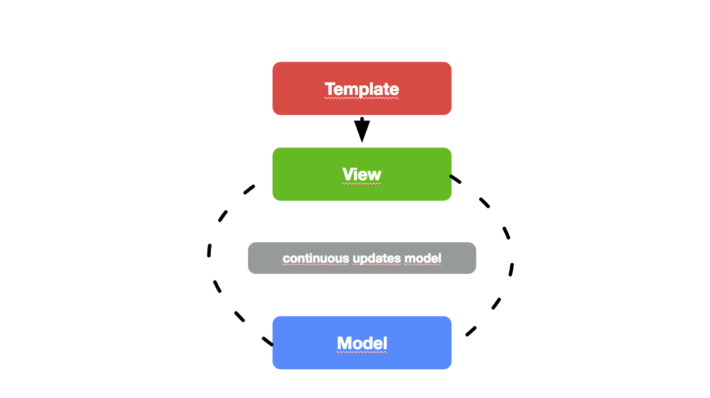
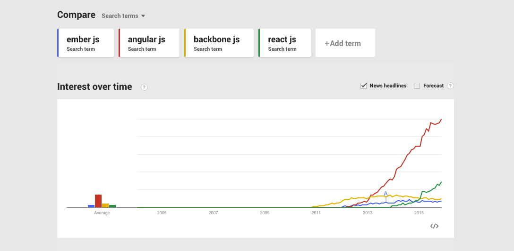
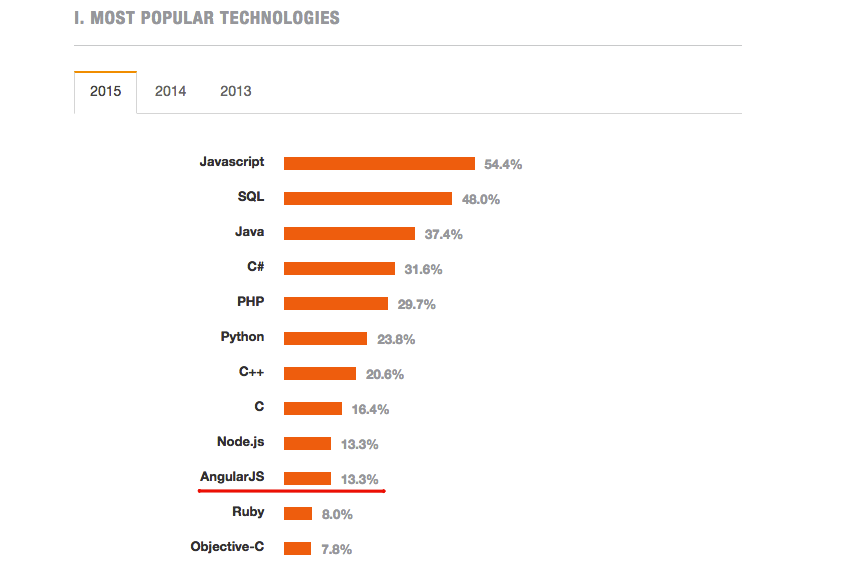
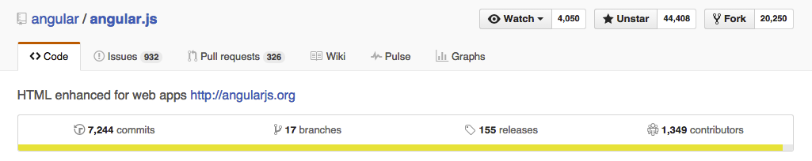
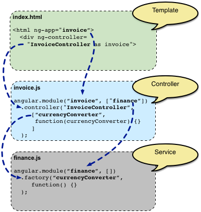
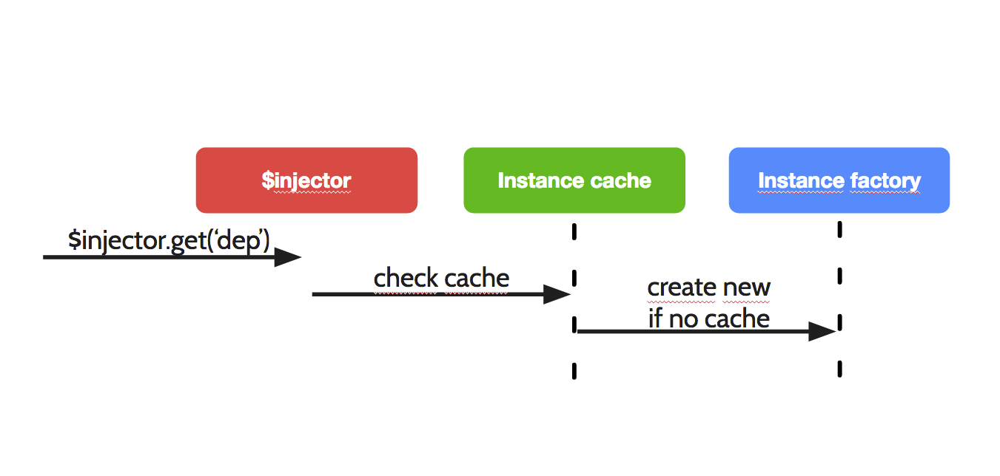
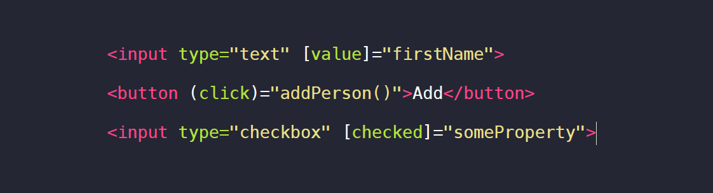

Супер-героический

Чынгыз Арыстан уулу
@chyngyz_arystan
Содержание
-
История создания фреймворка
-
Ее особенности
-
Основные компоненты
-
Полезные инструменты
-
AngularJS v2
Что такое AngularJS?
Cтруктурный фреймворк предназначенный для построения динамических web-приложений. Позволяет расширить возможности и синтаксис существующего HTML.

Немного истории...
Мишко Хевери
Google - 2009г.
Задачи
- декларативное расширение HTML новыми элементами/аттрибутами - директивами
- любое изменение UI – должно быть следствием изменения модели (two-way data binding)
- тесты пользовательских компонентов
- MV*-фреймворк
- создание простой и четкой структуры приложения
- интеграция с другими фреймворками
Целесообразное использование
- Rich-UI приложения
- Single-page(SPA) приложения
- REST-oriented приложения
Связывание данных
- односторонняя (особенность многих JS MVC фреймворков)
- двухсторонняя (Angular, Ember, Knockout, ReactJS)
Одностороннее связывание данных
Двухстороннее связывание данных
Производительность
Angular создает минимум накладных расходов, и поэтому в плане производительности находится на достаточно высоком уровне.
Google Trends
Stackoverflow
JavaScript remains the most-used programming language. Node.js and AngularJS are busting out.
Github
Angular behind the scene

Startup

Runtime

Контроллер
JavaScript функция с собственной областью видимости предназначенная для описания бизнес-логики приложения.

Контроллер написан на JavaScript. JavaScript — императивный язык.
Шаблон представления написан на HTML. HTML — декларативный язык.
Сервис
Сервис
Взаимозаменяемые компоненты выполняющие определенные задачи в рамках web-приложения.
DI в AngularJS
Для управления зависимостями в каждом AngularJS приложении существует свой сервис локатор - инжектор.
Задача инжектора - управление жизненным циклом объектов, внедрение зависимостей.
Создание и поиск зависимостей
Директивы
позволяют задавать определенное поведение элементам.
Директивы «из коробки»
- ngModel – связывание элемента с моделью
- ngShow / ngHide – видимость элемента
- ngClass – добавление CSS-классов на элемент в зависимости от свойств модели ▪ ngHref – задание пути для ссылочного элемента
- ngSubmit – переопределния события отправки HTML-формы на сервер
- +65 разных других
Способы объявления директив
- HTML тег
- HTML аттрибут
- HTML комментарий
- HTML класс
Простой пример
Подробнее пример
Transclude
Транс.. чего???
transclude - Institute a programming step of substituting a template or other input for its rendered text, such as when parsing wikitext.
Пример "трансклуда"
В полном виде

Filter
See the Pen AngularJS: ng-animate example by Chyngyz (@Chyngyz) on CodePen.
ngRoute
See the Pen $routeProvide example by Chyngyz (@Chyngyz) on CodePen.
Дополнительные модули
- angular-animate.js
- angular-aria.js
- angular-cookies.js
- angular-loader.js
- angular-messages.js
- angular-message-format.js
- angular-mocks.js
- angular-resource.js
- angular-route.js
- angular-sanitize.js
- angular-scenario.js
- angular-touch.js
Тестирование
Unit Tests
Пример
Тестирование
End-to-end Tests

Пример
Инструменты и полезное
Для дебага


AngularUI
Ace, Alias, Bootstrap, Calendar, CodeMirror, Date, Event Binder, Google maps, Grid, Indeterminate, Layout, Leaflet, Map, Mask, Mention, Router, Scroll, Scrollpoint, Select, Slider, Sortable, TinyMCE, Tour, Uploader, Validate
https://angular-ui.github.io/UI Router
UI-Router маршрутизация фреймворка для AngularJS созданная AngularUI командой. Она обеспечивает иной подход, чем ngRoute, и меняет, основанное на состояние приложения, а не только URL маршрута.

 http://ionicframework.com/
http://ionicframework.com/
Новый синтаксис
Написан на Typescript
Текющая версия 2.0.0-alpha.46
https://angular.io/Не будет
Контроллеров
$scope
DDO (Directive Definition Object)
angular.module
jqLite
Подробнее
Спасибо!
Email: arystanuulu@gmail.com
Twitter: @chyngyz_arystan